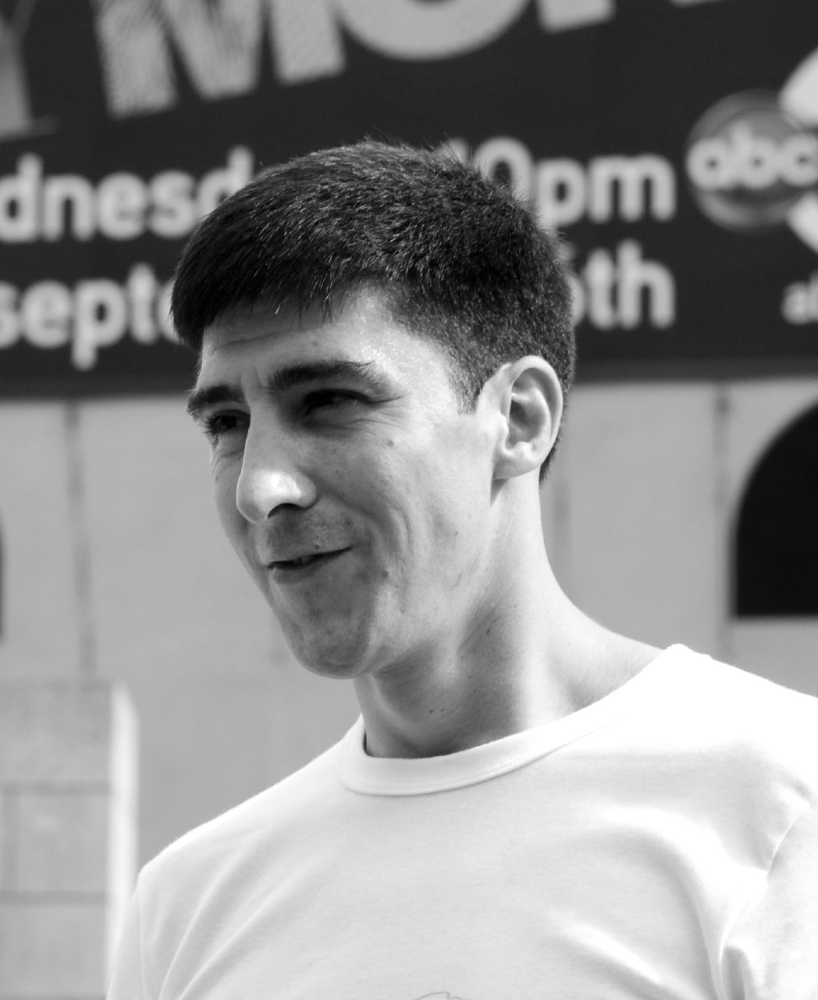

How Parkour Began
Parkour traces its roots to 1902, when French naval officer Georges Hébert developed the "Méthode Naturelle," a training system built on natural movements like running, jumping, climbing, and balancing. That philosophy later inspired Raymond Belle, whose son David Belle grew up practicing those same ideas. In the late 1980s, David began adapting them to the urban landscape of Lisses, France, and with a group of friends he helped shape what would become parkour.